gHRV
A graphical tool for Heart-Rate Variability analysis
This project is maintained by milegroup
Table of contents
Overview
Heart Rate Variability (HRV) can be defined as the variations in the sequence of periods between consecutive heartbeats, and it is regulated by factors extrinsic to the circulatory system. Variability is the result of a trade-off between the influence of the parasympathetic system (accelerating the heart rate) and the sympathetic system (slowing the heart rate). This relationship was experimentally determined by Aselkrod in 1981 [Aksel81]. Since then, its clinical usefulness in various pathologies such as myocardial infarction, hypertension, heart failure, transplantation, etc, has been studied [Malik95] [Task96]. The typical HRV spectrum of a healthy person at rest is mainly composed of two components: a low frequency band (LF), from 0.04 to 0.15 Hz; and a high frequency band (HF) ranging from 0.15 to 0.4 Hz.
HRV analysis has been a very active research field for the last twenty years. Distinct techniques have been proposed in this area, such as spectral analysis, non-lineal techniques or time-domain methods [Achar06] [Chang07] .
At the present moment, HRV analysis has not been established as a standard method for diagnosis. This has conducted providers of medical technology at excluding this type of analysis in their devices, and researchers depend on software applications in order to apply additional processing methods.
The common factor for all the algorithms aimed at helping clinicians in the HRV analysis is the fact that the majority of them have been implemented by particular investigation groups, which are forced to develop their own and proprietary software, due to the lack of a common software package, easily accessible and downloadable, that fulfills the particular requirements of each research association.
To perform this task, many programming languages are employed, such as Matlab [MatHRV], Java [Bogu11], or even LabView [Nati09]. Other software packages alse deserve comment, such as the Kubios-HRV [Nisk04].
Many applications can be found in the literature, including generation of correlated discrete ordinal data arising from longitudinal studies of medical research [Ibra11], detection of breast cancer [Roca12], population pharmacokinetic modeling for analyzing drugs effects and individual variations [Sun11], or time-series analysis [Koso11].
Due to the growing scientific community developing specific software, and attending to the requirements of researchers, that usually need to unify software functionality into one open source and easily extendible tool, we have developed gHRV, a software package for HRV analysis (partially based on RHRV [Rodr11]), in an attempt to help clinicians in the analysis of the heart rate. The gHRV software integrates partially RHRV as mathematical tool, but the user is offered a powerful and simple graphical interface. Central ideas behind its design are easy of installation and of use.
gHRV has been implemented employing Python [Pyth], based on object oriented programming (although it also supports imperative and functional programming), giving clean and legible code, which improves software maintenance. Besides, it makes a quite efficient use of memory and it is very extensible, thanks to libraries available to programmers. These advantages make Python one of the ten most used programming languages in this moment. Appart from these benefits, Python provides:
- A high grade of efficiency and portability.
- Efficient and flexible libraries, which allow to implement a graphical interface, advanced mathematical functions and highly customizable plotting capability.
- Developing tools (IDEs or Integrated Development Environments, compilers, debuggers...) freely available for distinct operating systems.
gHRV is a simple and easy-to-use graphical interface, and guided interaction with the user is performed in order to minimize errors and functional problems. With this purpose, the interface enables or disables interactive elements depending on the state of the interaction.
An important functionality of gHRV is the possibility to deal with different episodes (apnea, ischemia,...), creating or adding new episodes or deleting existing ones, and to obtain time evolution of power in frequency bands.
The following main functionalities are provided:
- Heartbeats: file loading, automatic filtering, manual filtering and interpolation.
- Episodes: file loading, removing all episodes and editing.
- Frame-based evolution: time evolution of power in frequency bands.
- Poincaré plots: representation of the Poincaré plots of the RR (beat-to-beat) intervals.
- Significance analysis: statistical analysis of spectral parameters, in and out episodes.
Details of the implementation and installation instructions are now given in the next Section.
Getting Started
License and Disclaimer
This program is free software: you can redistribute it and/or modify it under the terms of the GNU General Public License as published by the Free Software Foundation, either version 3 of the License, or (at your option) any later version.
This program is distributed in the hope that it will be useful, but WITHOUT ANY WARRANTY; without even the implied warranty of MERCHANTABILITY or FITNESS FOR A PARTICULAR PURPOSE. See the GNU General Public License for more details.
System Requirements
To run gHRV on you computer, you can select Windows, Linux or Mac OSX operating systems. Minimal system requirements are:
Windows
Windows XP or newer, 32 or 64 bits.
OSX
MacOSX Lion or newer.
Linux
Recent distribution based on deb packages. Tested on Ubuntu 11.10, 12.04 LTS and 12.10.
Downloading gHRV
Previous to the installation of gHRV, you should download it from http://milegroup.github.com/ghrv/packages.html. gHRV is distributed as free software (GNU GPL) and binaries for Windows, MacOSX and Debian/Ubuntu systems are provided as well.
For downloading gHRV, select the corresponding version for you operating system. Different versions are avalaible. Version 1.3 is a stable and recommended version, that will be explained in this Manual. In this documentation, X and YY refer to the version and the subversion of the gHRV program.
Appart from the binaries for the different operating systems, you can also download the source code (explained later in this Section), and example files, among others:
- An ascii file containing beats positions: beat_ascii.txt.
- An ascii file containing episodes: episodes.txt.
- A simple gHRV project with episodes: SimpleProject.gHRV.
Installing gHRV
Once you have downloaded gHRV, you must install it in your computer as follows.
Windows
Windows binary is available as a gHRV_X_YY.msi file. Installation is straightforward: double click on the downloaded file. First, the installer must be authorized to proceed.

Windows installation: security warning
The gHRV setup wizard is now open; just follow the instructions to complete the installation process.
Windows installation: setup wizard
After license agreement, gHRV is installed on your system. Installation also creates a link of the tool in your desktop.
gHRV has been tested on Windows XP and Windows 7 (32 and 64 bits).
OSX
OSX binary is distributed as a gHRV_X_YY.dmg file. To install, open the file and a new window appears with a file named gHRV.app inside.

OSX installation: folder containing the installation files for gHRV
Just drag this file to the Applications folder.

Installing gHRV in OSX
Then, you can eject the unit that was mounted by the .dmg file. gHRV has been tested on OSX Mountain Lion and OSX Lion.
Deb-based linux systems
gHRV is distributed as a gHRV_X.YY_all.deb package. The easiest way to install is to download this package, open a terminal and change to the directory where the file is. Then use the commands:
$ sudo apt-get install gdebi
$ sudo gdebi gHRV_X.YY_all.deb
gdebi installs gHRV and its dependencies. The program is avalaible both in the Start menu and in console mode as gHRV.
You can also install gHRV with the Software Centre.
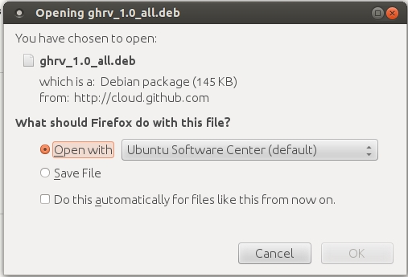Installing gHRV in Linux Software Centre
Click on Open with and, on the next step, click on Install.

Installing gHRV in Linux Software Centre (II)
gHRV has been tested on a Ubuntu 11.10, 12.04 LTS and 12.10 systems
Source package
gHRV sources are distributed as a gHRV_X.YY.tar.gz. Advanced users can run the program from the source code. A working installation is needed for the Python programming language with the following libraries:
- Matplotlib
- wxPython
- Numpy
- Scipy
In Linux debian-based systems, just open a terminal and use the following command:
$ sudo apt-get install python-numpy python-wxgtk2.8 python-matplotlib python-scipy
Then, go to the directory where the .tar.gz was extracted and use:
$ python gHRV.py
Uninstalling gHRV
If you want to uninstall gHRV from your computer, follow the next instructions.
Windows
To uninstall gHRV, go to Start -> Control Panel -> Add or Remove programs, select gHRV and press the Remove button.
OSX
To uninstall gHRV, just drag the gHRV program from the Applications folder to the Trash folder.
Deb-based linux systems
To uninstall gHRV, open a terminal and use the command:
$ sudo apt-get remove ghrv
Updating gHRV
Updating gHRV to other versions is an easy task that can be performed with the following instructions.
Windows
To update gHRV to a newer version, just make a new install. The installation procedure updates the program automatically.
OSX
Updates are installed using the same procedure as new installs. The system asks for confirmation if the new version overwrites the old one or not.
Deb-based linux systems
Updates are installed using the same procedure as new install with command gdebi.
Known Issues
OSX
There is some focus problem in OSX implementation of wxpython libraries. The effect of this problem is that sometimes, just after running gHRV, new windows are not shown. Normally, clicking on the gHRV icon in the dock solves this problem.
Deb-based linux systems
If Linux version is called from a terminal, there is a warning (Gtk-WARNING **: Unable to retrieve the file info...) in the terminal when saving a new project. This is caused by the implementation of file dialogs in some libraries. Users can ignore this message since the file is saved correctly.
Using gHRV Software
Running gHRV
gHRV application provides a broad functionality related to HRV analysis, and can be easily and intuitively used, presenting results in a very illustrative and attractive way for the user. To execute gHRV just double-click on the corresponding icon.
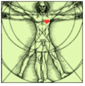Initial view for gHRV
Once the application is running, the appearance of gHRV is quite similar to those that can be present in other widely used softwares.
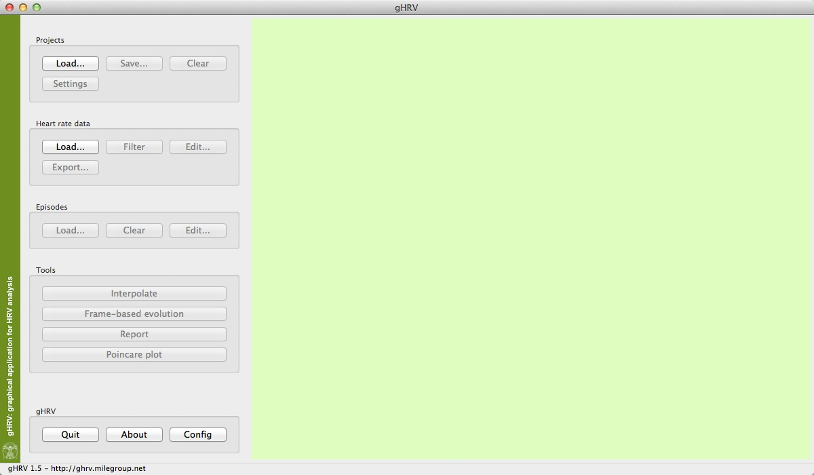gHRV icon: double-click for executing
On the left hand side of the window, several options can be selected. When starting gHRV, only several actions can be performed: the user can select to load either a project or a hear rate data file, by clicking the corresponding option. The remaining functionalities are activated either when data are avaliable or it becomes possible to perform the action.
A detailed description about all the options will be given in the next Sections of this manual.
Projects Panel
Load
When applying heart rate analysis employing gHRV, a .gHRV project file, with a specific format, can be created and retrieved for modifying it in posterior sesions. To load a previously created project, just click on Load, and select the corresponding file project. As an example, you can download from the web page http://milegroup.github.com/ghrv/packages.html the file SimpleProject.gHRV.
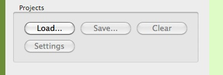Initial loading options for gHRV
If the file format is not accepted by gHRV, an error message will appear.
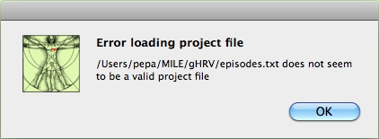Initial project loading error message
When the selected project is retrieved, it can be observed that the Load options are all blurred (not allowed), and the Save, Clear and Settings options from the Projects Panel are now active, and can be executed.

IgHRV project retrieved from SimpleProjectgHRVfile
In the upper left corner of the graph area, options for zooming or reducing the graph, or for displacing the signal points along the time axis can be observed.
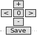Command options for excuting gHRV commands
These functions allow the user to manipulate the graphical representation and to exports plots that can be used in other programs. Exporting formats are jpg, png, pdf, svg, tif and eps (avalaibility of some of these formats depends on the operating system).
Save
The Save option allows to save changes in the project, or even save it as a different project.

Saving a new project in gHRV
Clear
For executing the Clear option, just double-click on the corresponding option, and a window will appear, giving the user the possibility of removing the project from the gHRV active interface.
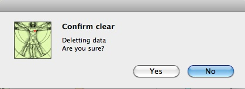Removing a project from gHRV memory
Settings
Finally, Settings options should be selected when either frequency or window analyzing values are modified. This options will be explained when describing the Config option, in the gHRV panel.
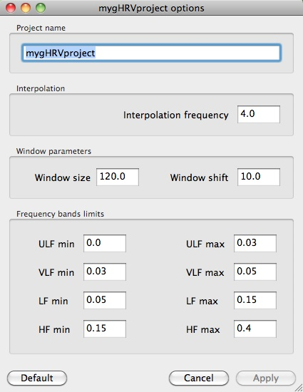Settings options panel
The project name can also be rewritten (not stored, for this option you must use Save). When clicking this option, a new window asking for confirmation appears.
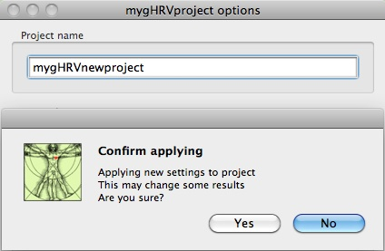Setting options panel: creating a new project
Heart Rate Data Panel
gHRV is able to work with different heart rate data file formats: Polar, Suunto, ASCII (beats and RR series) and WFDB (qrs) beats files. As an example, you can download from the http://milegroup.github.com/ghrv/doc.html the file beat_ascii.txt, where data are in a single-column ascii file, indicating the beats position from a previously annotated ECG file.
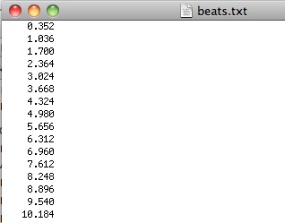Accepted format file for heart rate data
The instantaneous heart rate can be defined as the inverse of the time separation between two consecutive heart beats. Once the beats have been loaded, the heart rate is calculated. In mathematical terms, this corresponds to the calculation of the series:
HR(i)=1000/[T(i)-T(i-1)]
where HR(i) is the instantaneous heart rate, and T(i) is the position of the i normal beat, measured in milliseconds, from the initial point of the file.
Load
To load a heart rate data file, just click on Load, and select the corresponding file.
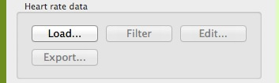Initial loading options for heart rate data files
If the data file format is not accepted by gHRV, an error message is displayed.
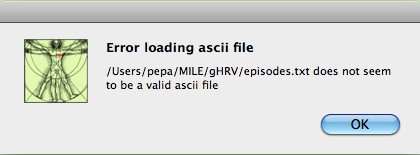Initial heart rate data file loading error message
When the selected file is retrieved, it can be observed that the Load options are blurred (not allowed, except for loading episodes), and Filter and Edit options from the Heart Rate Data Panel are now active, and can be executed.
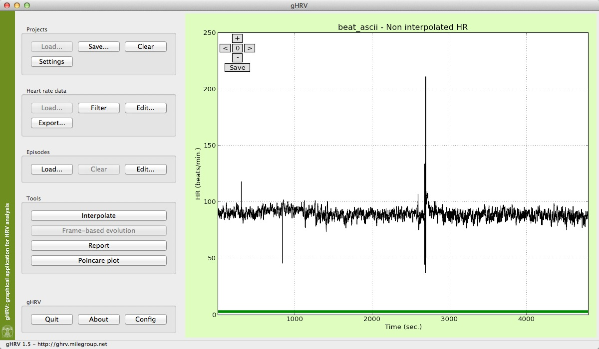Heart rate data retrieved from beats.txt file
Filter
Just click in the Filter option to obtain a filtered version of the hear rate data. This option can also be performed once for an specific signal in each sesion work, and allows to reject uncorrect heart beats, due to erroneous values of the instantaneous heart rate, distorting the result of the analysis. The algorithm uses adaptive thresholds for rejecting those beats different from the given threshold more than a certain value. The filter also eliminates points that are not within acceptable physiological values. The filtered non-equispaced heart rate signal is obtained.
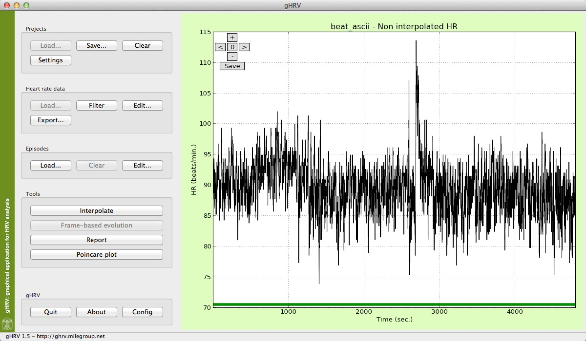Filtered heart rate data obteined with the Filter option
Edit
In many ocasions, the user may desire to remove artifacts or points in the heart data. Use the Edit option to perform a manual revision of the automatic removing, and remove points by selecting them on a graphical window.
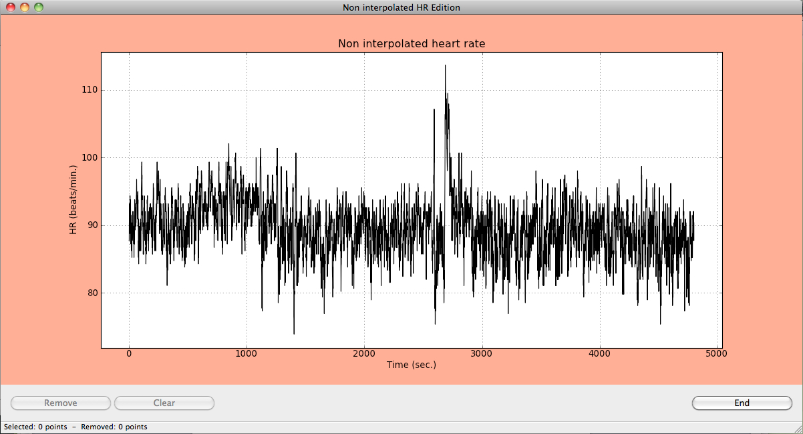Edit and remove the data to remove point
Just select a rectangle area containing the points to be eliminated, and click in the upper left corner first, following by a click on the lower right corner. A green rectangular area containing the points will appear in the graphic window. At the bottom of the window, information about the selected points to be removed is also shown.
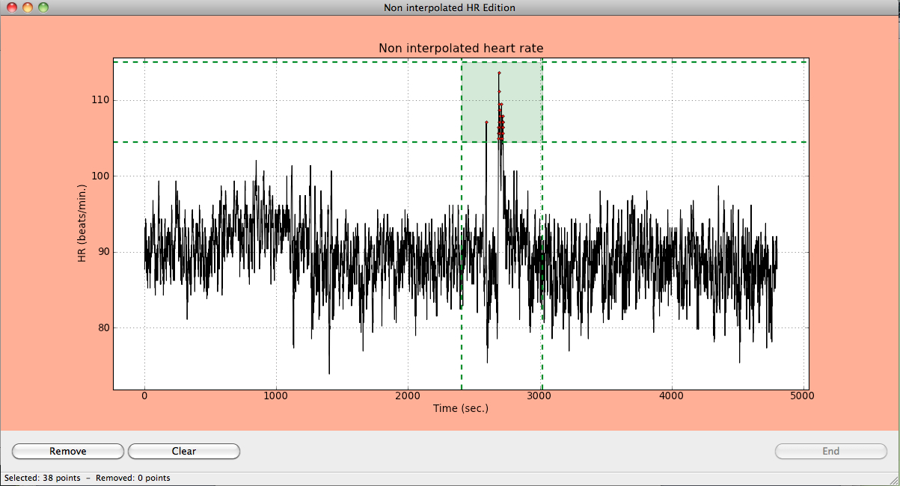Rectangular area containing the points to be eliminated
To remove the previously selected points, juts click on the Remove button; in other case, just click Clear and return to the previous step. Repeat the process until you have finished to remove points. Press End to finish the removing process. A new window asking for confirmation appears. Press Yes and continue the analysis.
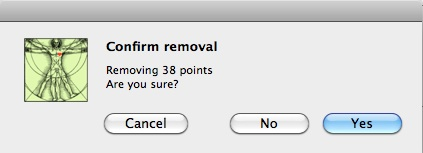Window containing a confirmation message for removing data points
Episodes Panel
In many ocasions, ECG files may be accompanied by episode files, reflecting specific situations of ischemia or apnea, for example. With gHRV, functions for loading and editing these episodes are provided.
The data corresponding to these episodes can also be incorporated to the gHRV analysis. To perform this, data should be in the format provided in the apnea_ascii.txt file, available at the web page http://milegroup.github.com/ghrv/packages.html.
Each file line must contain the beginning (Init_Time), type (Resp_Events), duration (Durat) and a numerical value (SaO2 in the example) associated with each episode.
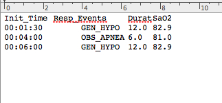Accepted format file for episodes data
Load
To load episode file, just click on Load and select the corresponding file. 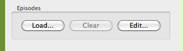
Initial loading options for heart rate data files
If the data file format is not accepted by gHRV, an error message is displayed.
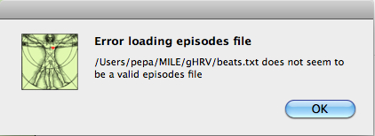Initial episode data file loading error message
When the selected project is retrieved, it can be observed that the Load options are not allowed, and the Clear and Edit options from the Episodes Panel are now active, and can be executed.
Clear
Use this option if you want to remove the information about episodes included in the heart rate data.
Edit
To add new episodes to your heart rate date, click on the Edit option, and a new window will appear.
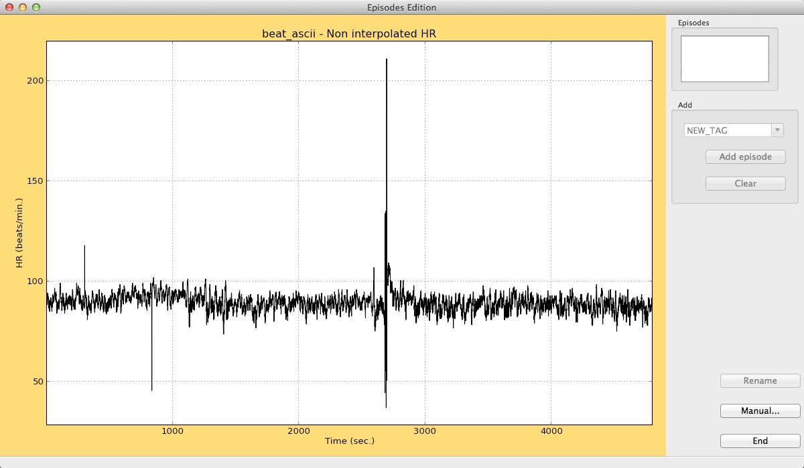Episodes options provided by gHRV
The user can add new episodes by clicking at the beginning and at the end of the episode in the graphical window. In the right panel, the Add option allows to rename the episode and click on the Add episode option to incorporate it to the data. Colors for tag episodes are automatically selected.
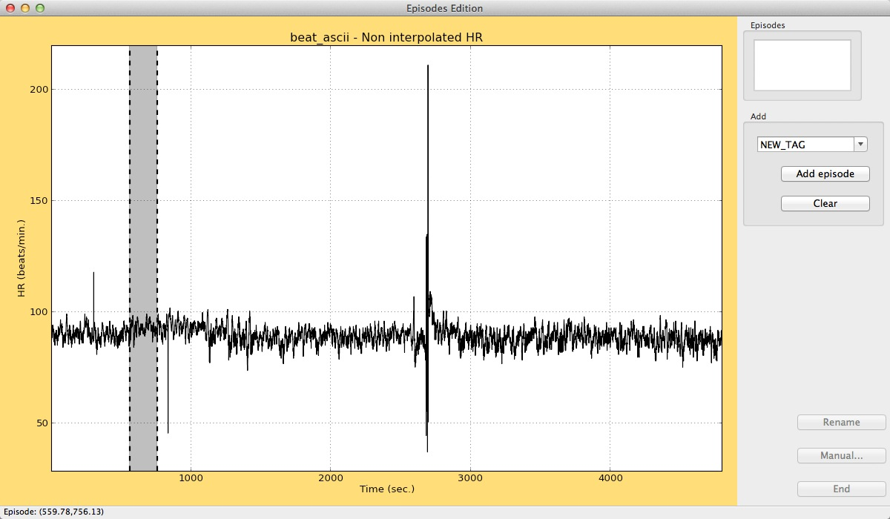Adding an episode employing gHRV
At the bottom of the window, information will be given about the position of the added episode. Add all the episodes necessary repeating the process.
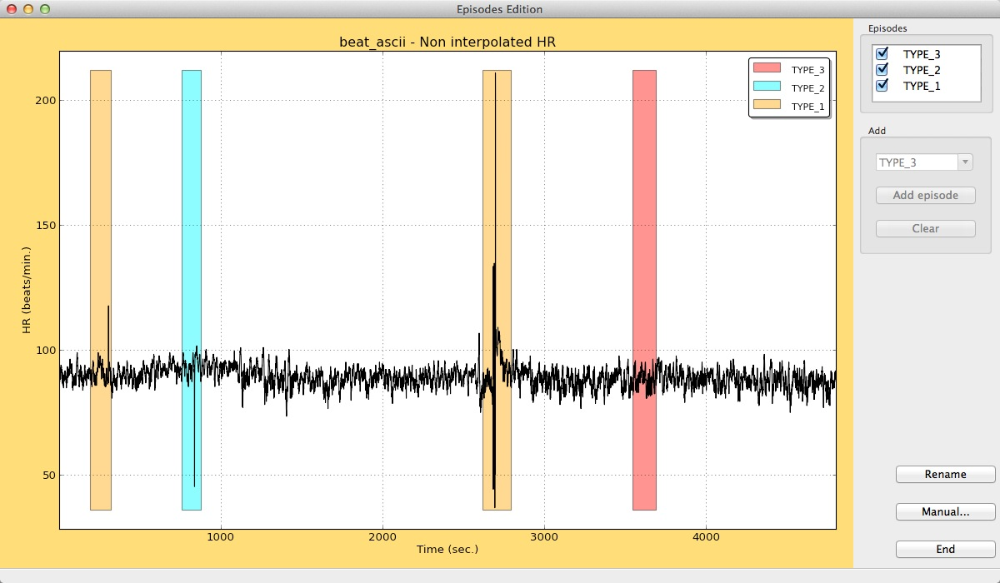Result of adding several episodes in gHRV
You can also create, modify and remove added episodes by clicking the Manual option. In this case, a new window will appear, allowing the user to modify the information, removing existing episodes or adding new ones. Just click on the Add option, or select one episode and click Edit to modifiy or remove it. Click on the End button when all the modifications have been performed.
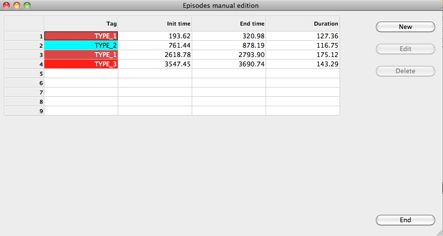Manual edition of episodes
Tools Panel
Functionalities on the Tools Panel can only be executed when a heart rate signal is loaded.
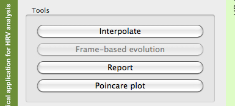Options for the tools panel
Interpolate
This options allows to interpolate the heart rate signal, applying a cubic spline interpolation. The default frequency for interpolation is 4 Hz, even although it can be modified in the Config option of the gHRV Panel, that will be explained in the corresponding Section of this Manual. A new heart rate signal adequate for performing the spectral analysis appears in the graphical window, preserving the episodes information (if existing).
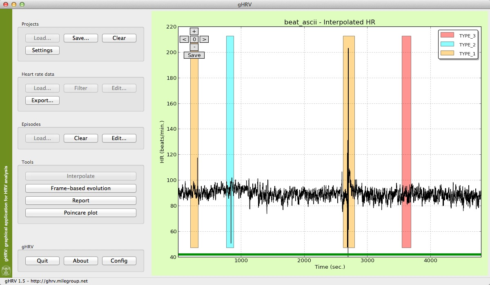Interpolation operation in gHRV
Interpolation option is now blurred, and it becomes possible to click in the Frame-based evolution button. With this option, spectral analysis is possible.
Frame-based evolution
To perform power spectral analysis, the spectrogram of the signal is first calculated, employing the Sort-Time Fourier Transform (STFT), with a window size and a displacement value of 120 10, respectively. These default values can also be modified in the Config option of the gHRV panel. Zero-padding of 1024 pixels is also applied. Next, the power in various spectral bands is obtained:
- VLF: power in the VLF band (0.03-0.05 Hz).
- LF: power in the LF band (0.05-0.15 Hz).
- HF: power in the HF band (0.15-0.4Hz).
These default values can be modified in the Config option from the gHRV panel. Other parameters are also provided:
- LF/HF ratio: defined as the ratio for the LF and the HF bands.
- Power: total value for the spectral power.
- Mean HR: mean heart rate value.
- HR STD: corresponding standard deviation.
- pNN50: percentage of differences between adjacent intervals that are >50 msec.
- rMSSD: square root of the mean of the squares of the differences between adjacent intervals.
- ApEn: approximate entropy.
- FracDim: fractal dimension.
- Heart rate: data employed to perform the analysis.
For performing spectral analysis, just click the Frame-based evolution option, and a window indicating the calculation process in progress will appear.
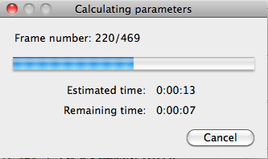Frame-based evolution calculation
As a result, a resulting window containing information about the spectral parameters is presented. Information for the previous defined episodes is also preserved.
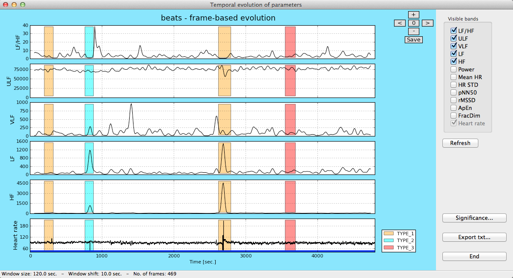Spectral analysis performed with gHRV
Click on the upper rigth panel to visualize or hide spectral bands and values. As an example, you can select LF/HF, Mean HR, HR STD rMSSD and ApEn, and then click the Refresh option, and visualization will be automatically updated to the user selection.
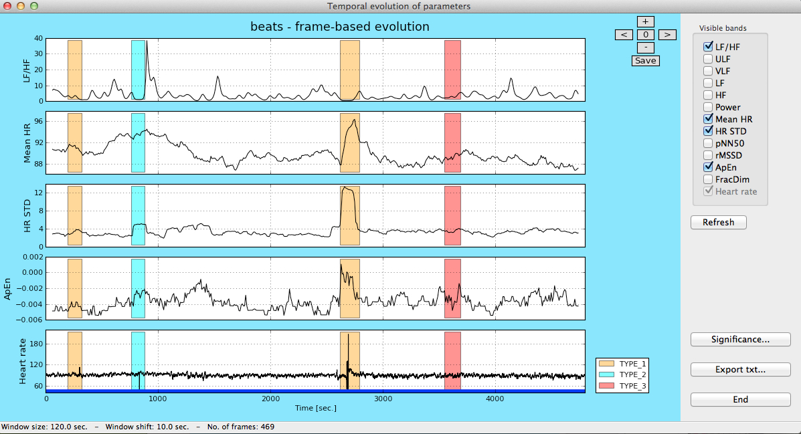Visualization options for the spectral analysis
By clicking on the Significance option, users can also select the parameter to be included study. The plot will show the distribution of the selected parameter inside/outside an episode, or in two different episodes. A Welch's t-test is performed on these values and the result of this test is shown at the bottom of the window. Click on the Close button when you have finished the significance analysis.
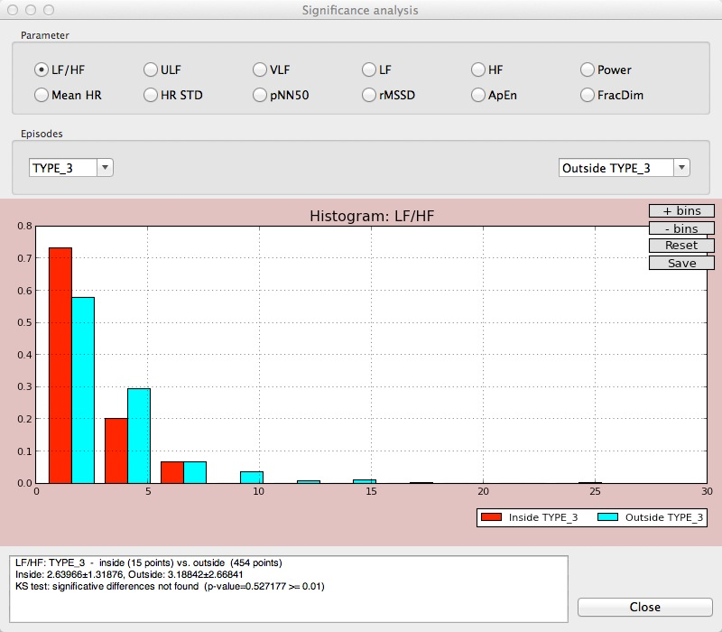Significance option for a selected parameter
A txt report can also be obtained with the Report txt option. By clicking in the button, a window for selecting the parameters to be included appears.
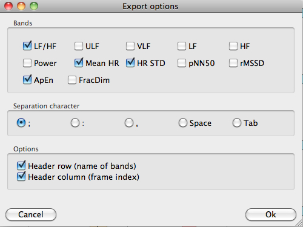Generation of a txt report for selected parameters
When the parameters are selected, the report will be saved at the selected directory.
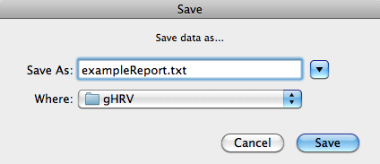Saving a txt report
Finally, click the End option when you have finished the temporal evolution analysis.
Poincaré Plot
The last option of the Tools Panel is the possibility of obtaining the Poincaré plot, used for quanitfying the self-similarity of signals. In this particular case, it represents a scatterplot of the current R-R interval, plotted against the preceding R-R interval, and provides gloabl and detailed beat-to-beat information on the behavior of the heart.
By clicking oh the Poincaré plot button, the global plot for the whole heart rate data is presented on a new window.
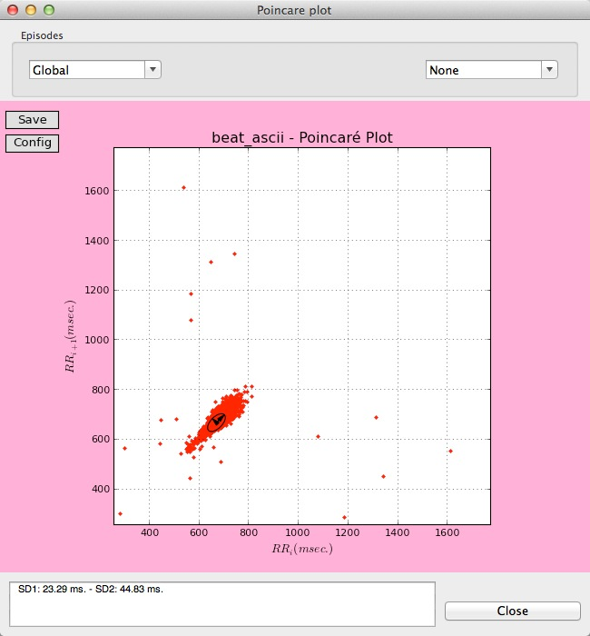Poincaré plot for the global ECG
The user can also select different Poincaré plots, among the different episodes and intervals present in the data that are being analyzed.
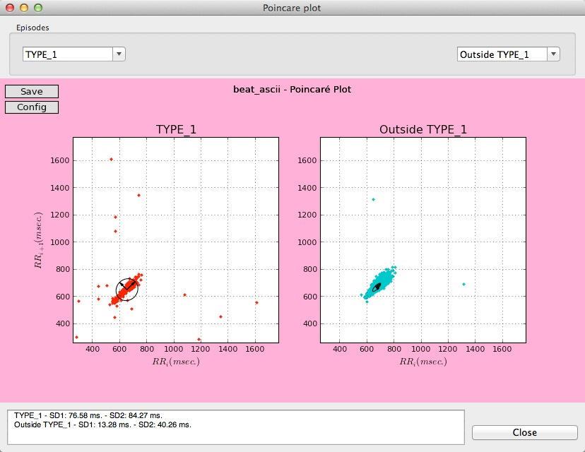Two different Poincaré plots for two types of episodes
Finally, the plot can be saved to a selected directory, clicking on ‘s’ on the lower menu bar.
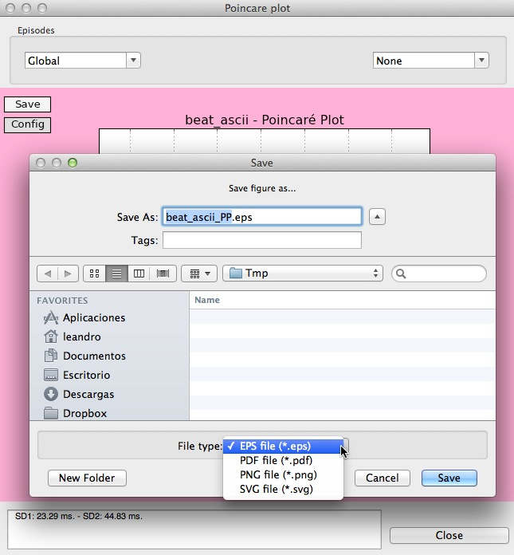Saving a Poincaré plot.
Report
Finally, a report including the analysis performed in the previous stages can be generated, by clicking the Report option. A resume window including the data analysis and results in then presented.
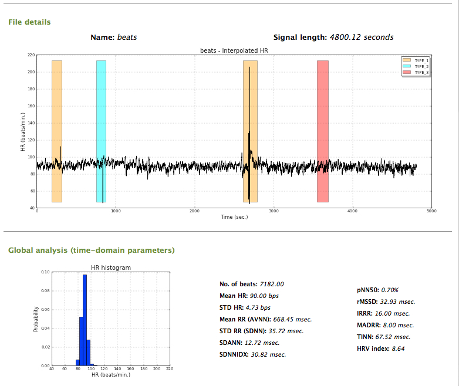Final report (1)
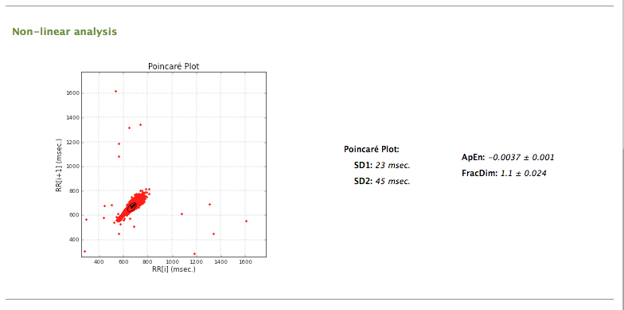Final report (2)
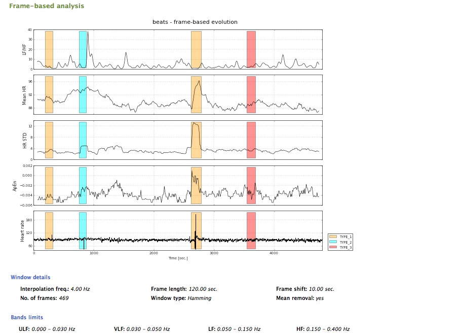Final report (3)
The user can also save the previous report as an HTML fiel, by clicking on the corresponding option.
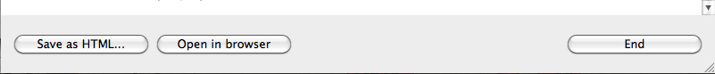Saving options for the final report
At the present moment, the
gHRV Panel
The last panel of the gHRV interface is gHRV Panel.
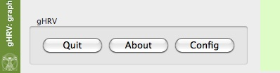. Options for the gHRV panel
About
Click on the About option to obtain information about gHRV.
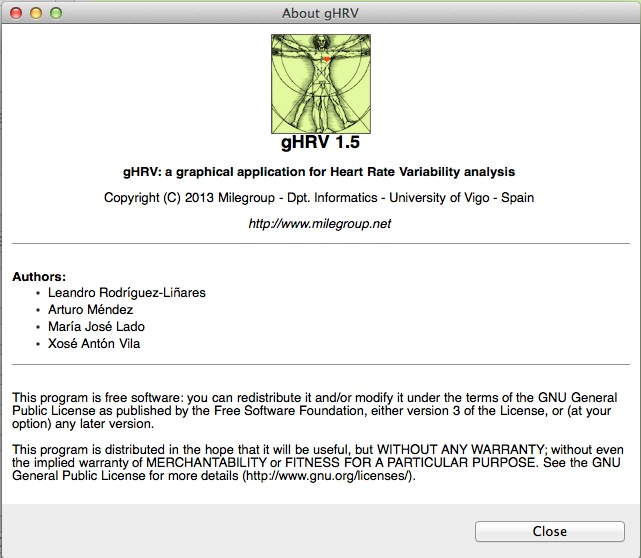About option for the gHRV panel
Config
Config allows the user to set default values for parameters.
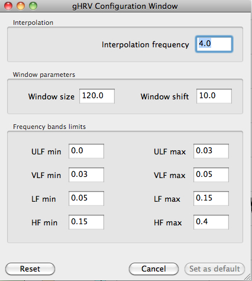Modification of default parameters for spectral analysis
The Config option allows to modify the parameters of the analysis, such as the interpolation frequency for filtering the heart rate data, adjusting either the window size or shift, as well as to vary the limits for the frequency bands. Just rewrite the modified value and then press the Set as default button. To retrieve the default values, press the Reset option.
Notice that if there is an active project in gHRV, this function does not change project's settings: to modify settings of project, it must be done with Settings button in the first group of buttons.
Quit
Just click the Quit option if you want to exit the program. A new window asking for confirmation appears.
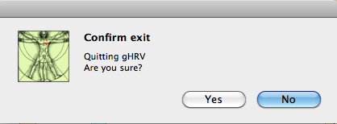Exiting window for gHRV
References
- [Achar06]
- U.R. Acharya, K.P. Joseph, N. Kannathal, C.M., Lim, J.S. Suri, Heart rate variability: a review, Medical and Biomedical Engineering and Computing 44, 1031-1051 (2006).
- [Aksel81]
- S. Akselkrod, D. Gordon, F.A. Ubel, D.C. Shannon, A.C. Barger, R.J. Cohen, Power spectrum analysis of heart rate fluctuation: a quantitative probe of beat to beat cardiovascular control, Science 213, 220-222 (1981)
- [Bogu11]
- Bogunovik, HRV-Frame: Java-based framework for feature extraction from cardiac rythm, Lecture Notes in Computer Science 6747, 96-100 (2011).
- [Chang07]
- F.C. Chang, C.K. Chang, C.C. Chiu, S.F. Hsu, Y.D. Lin, Variations of HRV Analysis in Different Approaches, In Computers in Cardiology 34, 17-20 (2007).
- [Ibra11]
- N.A. Ibrahim, S. Suliadi, S., Generating correlated discrete ordinal data using R and SAS IML, Computer Methods and Programs in Biomedicine, 104, 122e-132e (2011).
- [Jovi11]
- A. Jovic, N. Bogunovik, HRV-Frame: Java-based framework for feature extraction from cardiac rythm, Lecture Notes in Computer Science 6747, 96-100 (2011).
- [Koso11]
- H. Kosorus, J. Honigl, J. Kung, Using R, WEKA and RapidMiner in time series analysis of sensor data for structural health monitoring. Proceedings of DEXA 2011, 306 – 310 (2011).
- [Malik95]
- M. Malik, A.J. Camm, Heart rate variability. Futura (1995)
- [MatHRV]
- http://www.macalester.edu/~kaplan/hrv/doc/
- [Nati09]
- National Instruments. Using LabVIEW for heart rate variability analysis. Published online at http://zone.ni.com/devzone/cda/epd/p/id/5832 on Apr 24, 2009.
- [Nisk04]
- J.P. Niskanen, M.P. Tarvainen, P.O. Ranta-aho, P.A. Karjalainen, Software for advanced HRV analysis, Computer Methods and Programs in Biomedicine 76, 73-81 (2004).
- [Pyth]
- http://www.python.org
- [Roca12]
- J. Roca-Pardiñas, M.J. Lado, P.G.Tahoces, C. Cadarso-Suárez, Reducing false positives in a CAD scheme for detecting breast microcalcificacions: a cuantitative study with GAMs, Cancer Prevention, (Alexandros Georgakilas, Ed.), 459-476 (2012).
- [Rodr11]
- L. Rodríguez-Liñares, A.J. Méndez, M.J. Lado, D.N. Olivieri, X.A. Vila, X.A., I. Gómez-Conde, An open source tool for heart rate variability spectral analysis. Computer Methods and Programs in Biomedicine 103, 39-50 (2011).
- [Sun11]
- X. Sun, K. Wu, D. Cook, PKgraph: An R package for graphically diagnosing population pharmacokinetic models. Computer Methods and Programs in Biomedicine, 104, 461-471 (2011).
- [Task96]
- Task Force of the European Society of Cardiology the North American Society of Pacing Electrophysiology, Heart rate variability: standards of measurement, physiological interpretation, and clinical use, Circulation 93, 1043-1065 (1996)
- [Vila97]
- J.A. Vila, F. Palacios, J. Rodríguez-Presedo, M. Fernández-Delgado, P. Félix, S. Barro, Time-frequency analysis of heart-rate variability, IEEE Engineering in Medicine and Biology Magazine, 16, 119-125 (1997).